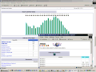
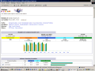

NetGate Announces Site Statistics Upgrade
We've upgraded our statistics application to provide you with improved analysis, graphical views, and many additional features.


Features
- Individual statistics for HTTP, SSL, and FTP
- Number of visits and number of unique visitors
- Visit duration and last visit
- Authenticated users and last authenticated visit
- Peak hourly and daily statistics (pages, hits, and byte counts)
- Domains and countries of visitors (pages, hits, and byte counts)
- Host list, last visits, and unresolved IP addresses list
- Most viewed, entry, and exit pages
- Files types
- Web compression statistics (for mod_gzip or mod_deflate)
- OS used (pages, hits, and byte counts for each OS)
- Browsers used (pages, hits, and byte counts for each browser)
- Robot visits (319 robots detected)
- Worms attacks (5 worm families detected)
- Search engines, key phrases and keywords used to find your site (115 search engines detected)
- HTTP errors (Page Not Found, etc.)
- Number of times your site is "added to favorites bookmarks"
Access and Security
Your new statistics can be accessed via your NetGate Hosting Control Panel. For your convenience and viewing enjoyment we have recompiled your January - March 2004 statistics. To improve privacy and security your statistics are no longer publicly available and can only be accessed via your control panel. Statistics files are now stored in a new subdirectory named "stats" which is located in your home directory.
Old Statistics
Your old statistics are still available in your "www_stats" directory. Please use the following link to view your previous statistics. Feel free to delete the "www_stats" directory from your "www" directory if you don't care about the old data.
Questions
If you have comments, or questions please contact us via email, or call us at 877-715-4927.